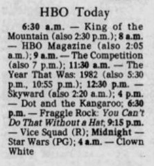

STAR WARS came to pay cable on February 1, 1983. This was not exclusive to HBO, and also included Showtime and The Movie Channel. A standard broadcast day begins at 6 am, so it was the assumption that they all could start broadcasting the film at 6am, Feb 1. But HBO really wanted to premiere it before their competition, so either additional negotiations were made, or they just took the contract for Feb 1 to be literal, and changed their schedule last minute (after the HBO guides had already been printed) and added an additional airing at 1am Eastern/Pacific, 12 am Central, thus honoring the February 1 contract, if you count Midnight as the start of the day.
The updated schedule in the database is sourced from the Allentown Morning Call Newspaper from the Eastern Time Zone, but a source from the Memphis Commercial Appeal in the Central Time Zone has a slightly different listing:

The Year That Was: 1982 and HBO Magazine are not shown, nor is The Competition, with instead a listing for the film Clown White at 4am. This is surprising, as the Central Time Zone feed is usually the same as the Eastern. The fast majority of the guides digitized for the database are listed for the Eastern/Pacific Time Zones, so that's what the database reflects, using the Allentown Morning Call as its source, but I wanted to show that the Central Time Zone may have had a slightly different lineup. Either way, STARS WARS fans could get their fix early and only on HBO!